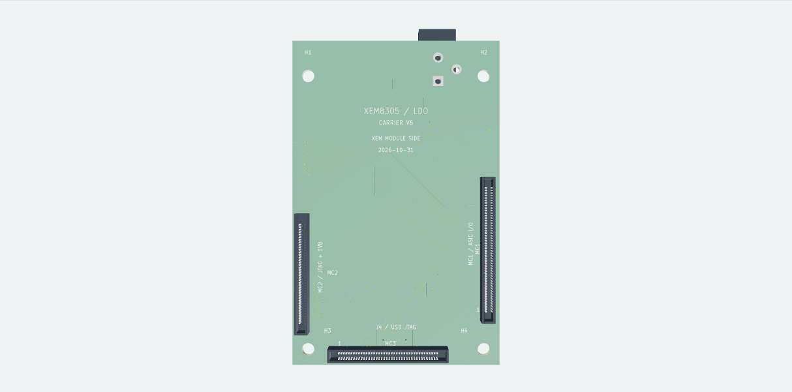

Current PCB · V6 · 1 November 2026
Direct LDO Carrier.
Four-layer XEM8305 carrier for the existing LDO board. V6 includes the MC2.14–MC2.16 SYSMON reference link. JLC placement, factory acceptance and powered qualification remain pending.
V6 · saved development checkpoint
- 4
- copper layers
- 92
- circuit components
- 0
- unconnected items

Loading 3D…
Loading schematic…
Click a part to inspect it.848 track/via objects · 0 unconnected items
Components
92 schematic components · 92 present in the V6 placement.
| Reference | Value / part | Circuit |
|---|
No matching parts.
0 PCB-only features
0 PCB-only mechanical or fiducial features.
Files
Full editable KiCad project · saved 2026-11-01 20:14:21 CST
Opening guide · View PDF · Top SVG · Bottom SVG


Sources and check results
Four-layer XEM8305 carrier for the existing LDO board. V6 includes the MC2.14–MC2.16 SYSMON reference link. JLC placement, factory acceptance and powered qualification remain pending.
92 schematic components / 92 PCB footprints. Native checks: 0 DRC errors, 0 DRC warnings, 0 unconnected items, 0 schematic/PCB parity findings. ERC: 0 errors, 0 warnings. Reports describe this exact saved checkpoint.
Ignored categories: erc: four_way_junction, simulation_model_issue, single_global_label; board: none. Layout, electrical behavior, SI/PI, assembly and manufacturing qualification are separate work.
The full project includes local symbol/footprint libraries and available native 3D models. 0 model references remain unresolved; inspect the package manifest. Nominal and substitute bodies remain indicative. The web 3D preview uses native board surfaces and 80 independently authored nominal bodies; it does not prove physical fit.
Native filenames, historical revision text, source credits and library identifiers are preserved. Product name: Direct LDO Carrier.
Source and package hashesCheck summaryERC reportDRC report3D provenance